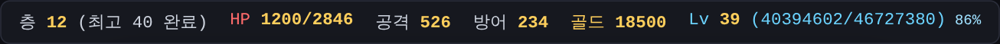
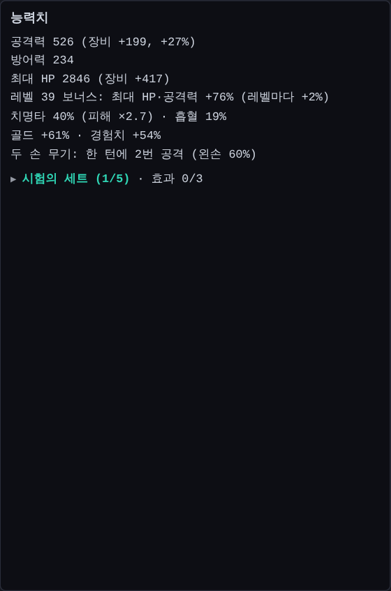
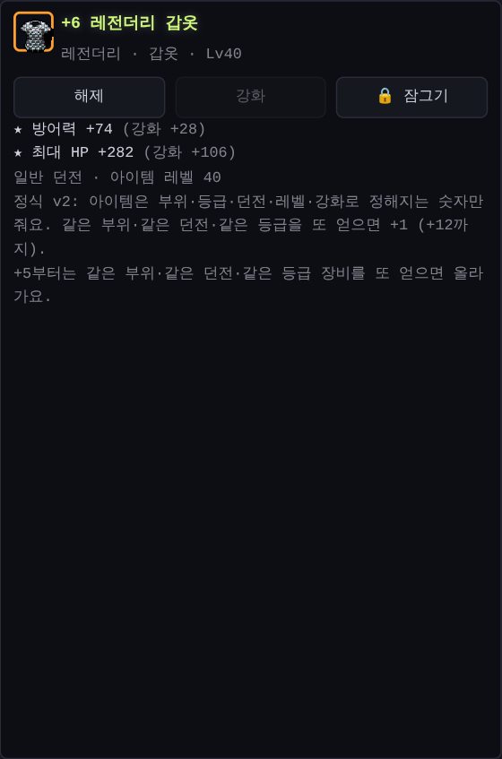
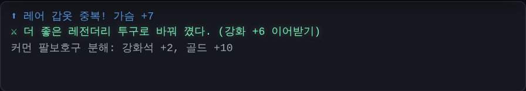
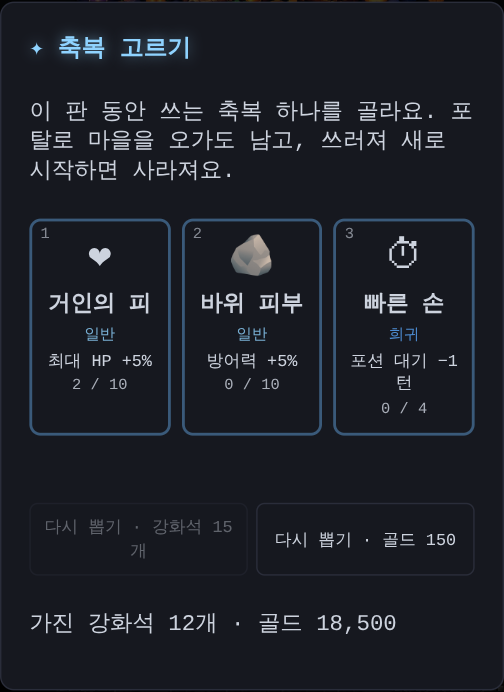
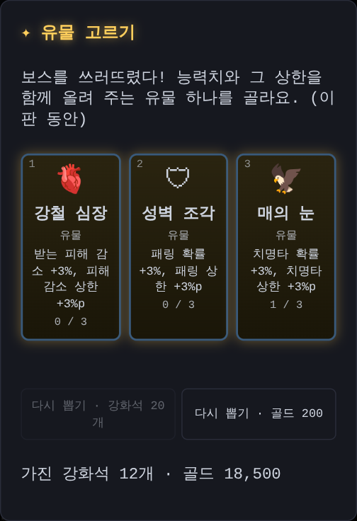
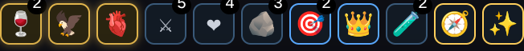
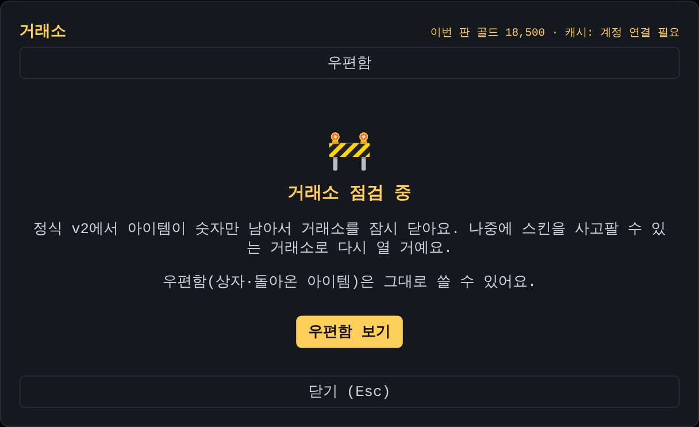
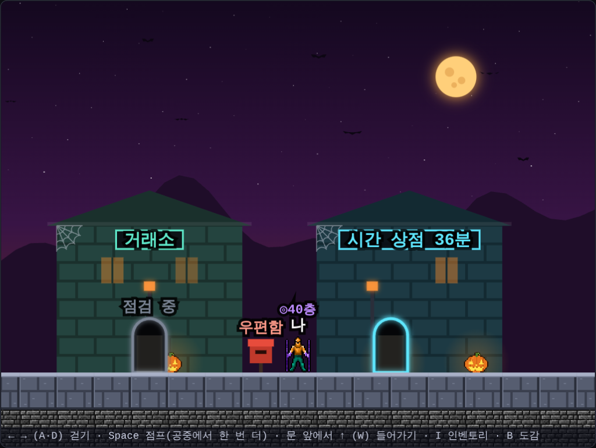

정식 v2: 매 층 축복과 자동 장비
어제 끝이 없는 구멍의 경험치를 크게 올렸더니, 레벨이 쑥쑥 올라 39레벨이 됐어요. 그런데 화면 위 레벨 옆에 있는 "+76%"를 보고 "이게 경험치인가?" 하고 헷갈렸어요.
+76%는 레벨 보너스였어요
던전 크롤러는 레벨이 하나 오를 때마다 최대 HP와 공격력이 2%씩 더 붙어요. 39레벨이면 (39 − 1) × 2% = 76%예요. 화면 위 "+76%"는 이 레벨 보너스였어요. 그런데 바로 앞에 경험치 숫자가 있어서 경험치처럼 보였어요.
이렇게 바꿨어요
- 레벨 옆에는 다음 레벨까지 경험치가 몇 %인지 보여 줘요. 100%가 되면 레벨이 올라요
- 레벨 보너스는 인벤토리의 [능력치]에 "레벨 39 보너스: 최대 HP·공격력 +76% (레벨마다 +2%)"처럼 설명해요


정식 v2: 아이템 관리는 자동으로, 고민은 축복으로
지금까지 던전 크롤러는 줍고, 비교하고, 팔고, 강화하고, 보석을 끼우는 일이 많았어요. 처음 온 사람에게는 이게 큰 벽이었어요. 그래서 Claude Code와 몇 번이나 설계를 주고받은 끝에 게임의 중심을 바꿨어요.
- 아이템 관리는 자동으로
- 플레이어가 고민하는 곳은 "이번 층에 어떤 축복을 고를까" 하나로
장비는 이제 숫자만
장비는 부위·등급·던전·레벨·강화로 정해지는 공격력·방어력·최대 HP 숫자만 줘요. 세트·룬워드·보석 같은 복잡한 효과는 쓰지 않아요. 등급이 높을수록, 깊은 던전에서 얻을수록 숫자가 커져요.

줍는 즉시 자동 장비
- 같은 부위·같은 던전·같은 등급을 또 주우면 낀 장비가 +1 돼요. 확률 없이 무조건, +12까지
- 더 좋은 장비를 주우면 바꿔 끼고, 강화 단계를 그대로 이어받아요. 좋은 등급을 주웠는데 손해 보는 일이 없어요
- 나머지는 분해돼서 강화석이 되고, 강화석은 +4까지 무기부터 차례로 자동으로 써요
- 레전더리 이상은 자동으로 분해하지 않고 가방에 남겨요

매 층 축복, 보스마다 유물
새 층에 내려갈 때마다 축복 3개 중 1개를 골라요. 공격력·HP·방어력, 첫 공격 피해, 보스 HP 줄이기, 포션, 새 층에서 회복, 계단 보기 같은 것들이에요. 마음에 안 들면 강화석이나 골드로 다시 뽑을 수 있어요 (같은 층에서 또 뽑으면 2배).

보스를 쓰러뜨리면 유물을 골라요. 유물은 치명타·흡혈·패링·받는 피해 감소를 주면서, 원래 넘을 수 없던 상한까지 올려 줘요.

모은 축복과 유물은 능력치 줄 바로 아래에 아이콘으로 보여요. 누르면 전체 목록이 나와요.

거래소는 잠시 점검, 마을도 정리했어요
장비가 숫자만 남으니 거래할 이유가 줄었어요. 거래소는 앞으로 스킨(장비 모습) 을 사고파는 곳으로 바뀔 예정이라, 그때까지 점검 중이에요. 우편함은 거래소 옆에서 그대로 쓸 수 있어요.

자동 장비 덕분에 필요 없어진 것들도 정리했어요.
- 대장간, 고대 다시 굴리기, 인벤토리 [추천] 탭, 아이템 [잠그기] 버튼을 없앴어요
- 마을에서 대장간 건물과 쓰지 않는 문 두 개를 치우고, 건물 사이를 좁혀서 덜 걸어도 돼요

포탈로 파밍해도 괜찮아요
축복을 모으면 "포탈 없이 끝까지 가야 하나?" 하는 걱정이 생겨요. 그래서 축복은 그 판에 붙여 포탈로 마을을 오가도 남게 했어요. 쓰러져서 새로 시작할 때만 사라져요. 일반 던전을 완료하면 축복을 가진 채 나이트메어로 바로 이어갈 수도 있어요.
시뮬레이션으로 맞춘 밸런스
사용자 데이터가 아직 적어서, Claude Code가 실제 드롭 규칙과 자동 장비·축복으로 1층부터 끝까지 200판을 돌려 숫자를 맞췄어요.
- 한 판으로 끝까지 가는 비율: 일반 약 75%, 이어서 나이트메어 약 87%, 헬 약 44%
- 처음 계산에서는 일반 던전이 97%로 너무 쉬웠어요. 그래서 일반 던전 몬스터가 깊은 층일수록 조금씩 더 세지게 했어요 (50층에서 HP·공격력 약 2.3배). 이제 마지막 10층이 진짜 고비예요
- 처음에는 마을에서 바로 헬에 들어가면 축복이 없어서 1~10층에서 모두 쓰러졌어요. 그래서 던전 입구 몇 층을 천천히 세지게 하고, 중간부터 들어가면 건너뛴 만큼 축복을 먼저 고르게 했어요
- 가지고 있던 보석·룬은 그대로 보관하고, 그만큼 강화석으로 보상했어요
다음에는 등급과 던전마다 확실히 다른 장비 모습과, 고른 모습을 입을 수 있는 옷장을 만들 거예요.